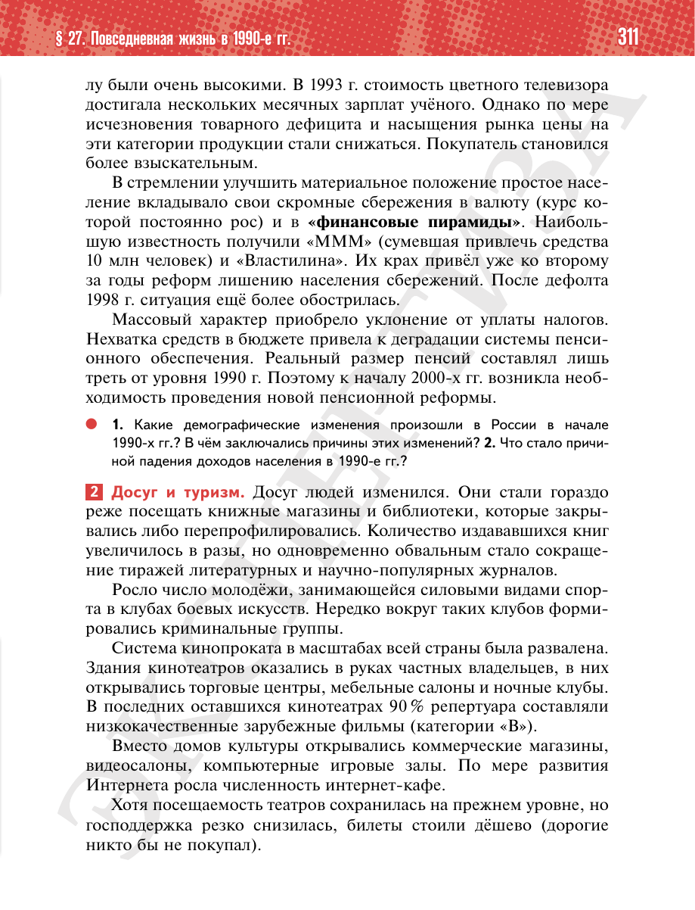

⌂
Мединский.нет
Последнее обновление: 21.08.2026
Мединский.нет
›
История России. 11 класс. Базовый уровень
›
Глава II. Российская Федерация в 1992 — начале 2020-х гг.
›
§ 27. Повседневная жизнь в 1990-е гг.
›
стр. 312

← стр. 311
Оглавление
стр. 313 →
×